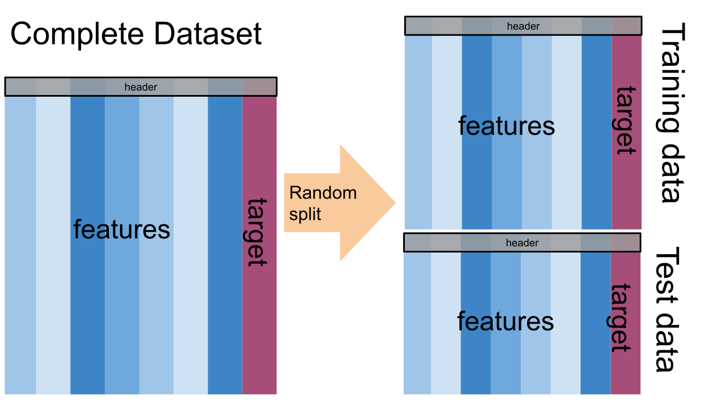

Intro to ML & Naive Bayes
Contents
13. Intro to ML & Naive Bayes#
We’re going to approach machine learning from the perspective of modeling for a few reasons:
model based machine learning streamlines understanding the big picture
the model way of interpreting it aligns well with using sklearn
thinking in terms of models aligns with incorporating domain expertise, as in our data science definition
this paper by Christopher M. Bishop, a pioneering ML researcher who also wrote one of a the widely preferred graduate level ML textbooks, details advantages of a model based perspective and a more mathematical version of a model based approach to machine learning. He is a co-author on an introductory model based ML
In CSC461: Machine Learning, you can encounter an algorithm focused approach to machine learning, but I think having the model based perspective first helps you avoid common pitfalls.
13.1. What is a Model?#
A model is a simplified representation of some part of the world. A famous quote about models is:
13.2. All models are wrong, but some are useful –George Box[^wiki]#
13.3. In machine learning, we use models, that are generally statistical models.#
A statistical model is a mathematical model that embodies a set of statistical assumptions concerning the generation of sample data (and similar data from a larger population). A statistical model represents, often in considerably idealized form, the data-generating process wikipedia
read more in theModel Based Machine Learning Book
13.4. Models in Machine Learning#
13.5. Starting from a dataset, we first make an additional designation about how we will use the different variables (columns). We will call most of them the features, which we denote mathematically with \(\mathbf{X}\) and we’ll choose one to be the target or labels, denoted by \(\mathbf{y}\).#
The core assumption for just about all machine learning is that there exists some function \(f\) so that for the \(i\)th sample
13.6. \(i\) would be the index of a DataFrame#
13.7. Types of Machine Learning#
Then with different additional assumptions we get different types of machine learning:
if both features (\(\mathbf{X}\)) and target (\(\mathbf{y}\)) are observed (contained in our dataset) it’s supervised learning code
if only the features (\(\mathbf{X}\)) are observed, it’s unsupervised learning code
13.8. Supervised Learning#
we’ll focus on supervised learning first. we can take that same core assumption and use it with additional information about our target variable to determine learning task we are working to do.
if \(y_i\) are discrete (eg flower species) we are doing classification
if \(y_i\) are continuous (eg height) we are doing regression
13.9. Machine Learning Pipeline#
To do machine learning we start with training data which we put as input to the learning algorithm. A learning algorithm might be a generic optimization procedure or a specialized procedure for a specific model. The learning algorithm outputs a trained model or the parameters of the model. When we deploy a model we pair the fit model with a prediction algorithm or decision algorithm to evaluate a new sample in the world.
In experimenting and design, we need testing data to evaluate how well our learning algorithm understood the world. We need to use previously unseen data, because if we don’t we can’t tell if the prediction algorithm is using a rule that the learning algorithm produced or just looking up from a lookup table the result. This can be thought of like the difference between memorization and understanding.
When the model does well on the training data, but not on test data, we say that it does not generalize well.

13.10. Let’s Practice:#
First machine learning model: Naive bayes
%matplotlib inline
import pandas as pd
import seaborn as sns
import numpy as np
from sklearn.model_selection import train_test_split
from sklearn.naive_bayes import GaussianNB
from sklearn.metrics import confusion_matrix, classification_report, roc_auc_score
iris_df = sns.load_dataset('iris')
To start we will look at the data
iris_df.head(1)
| sepal_length | sepal_width | petal_length | petal_width | species | |
|---|---|---|---|---|---|
| 0 | 5.1 | 3.5 | 1.4 | 0.2 | setosa |
And notice that there are equal number of samples for each value of the species.
iris_df['species'].value_counts()
setosa 50
versicolor 50
virginica 50
Name: species, dtype: int64

We’re trying to build an automatic flower classifier that, for measurements of a new flower returns the predicted species. To do this, we have a DataFrame with columns for species, petal width, petal length, sepal length, and sepal width. The species is what type of flower it is the petal and sepal are parts of the flower.
The species will be the target and the measurements will be the features. We want to predict the target from the features, the species from the measurements.
feature_vars = ['sepal_length', 'sepal_width','petal_length', 'petal_width',]
target_var = 'species'
X_train, X_test, y_train, y_test = train_test_split(iris_df[feature_vars],iris_df[target_var],random_state=1)
X_train.shape
(112, 4)
X_test.shape
(38, 4)
iris_df.shape
(150, 5)
112/150
0.7466666666666667
sns.pairplot(iris_df,hue='species')
<seaborn.axisgrid.PairGrid at 0x7f9ee2690b50>

13.11. What does Naive Bayes do?#
Naive = indepdent features Bayes = most probable
gnb = GaussianNB()
type(gnb)
sklearn.naive_bayes.GaussianNB
gnb.__dict__
{'priors': None, 'var_smoothing': 1e-09}
gnb.fit(X_train,y_train)
GaussianNB()In a Jupyter environment, please rerun this cell to show the HTML representation or trust the notebook.
On GitHub, the HTML representation is unable to render, please try loading this page with nbviewer.org.
GaussianNB()
gnb.__dict__
{'priors': None,
'var_smoothing': 1e-09,
'classes_': array(['setosa', 'versicolor', 'virginica'], dtype='<U10'),
'feature_names_in_': array(['sepal_length', 'sepal_width', 'petal_length', 'petal_width'],
dtype=object),
'n_features_in_': 4,
'epsilon_': 3.1405070153061226e-09,
'theta_': array([[4.94594595, 3.35675676, 1.46756757, 0.23513514],
[5.96470588, 2.74411765, 4.23529412, 1.30882353],
[6.51707317, 2.95853659, 5.52926829, 2.00243902]]),
'var_': array([[0.10842951, 0.13434624, 0.02651571, 0.01146823],
[0.28875433, 0.10658305, 0.22346021, 0.04139274],
[0.36775729, 0.09754908, 0.31280191, 0.07877454]]),
'class_count_': array([37., 34., 41.]),
'class_prior_': array([0.33035714, 0.30357143, 0.36607143])}
gnb.score(X_test, y_test)
0.9736842105263158
y_pred = gnb.predict(X_test)
y_pred[:3]
array(['setosa', 'versicolor', 'versicolor'], dtype='<U10')
y_test[:3]
14 setosa
98 versicolor
75 versicolor
Name: species, dtype: object
confusion_matrix(y_test,y_pred)
array([[13, 0, 0],
[ 0, 15, 1],
[ 0, 0, 9]])
print(classification_report(y_test,y_pred))
precision recall f1-score support
setosa 1.00 1.00 1.00 13
versicolor 1.00 0.94 0.97 16
virginica 0.90 1.00 0.95 9
accuracy 0.97 38
macro avg 0.97 0.98 0.97 38
weighted avg 0.98 0.97 0.97 38
sum(y_pred ==y_test)
37
37/len(y_test)
0.9736842105263158
y_train_pred = gnb.predict(X_train)
sum(y_train_pred == y_train)
106
len(y_train)
112
106/112
0.9464285714285714